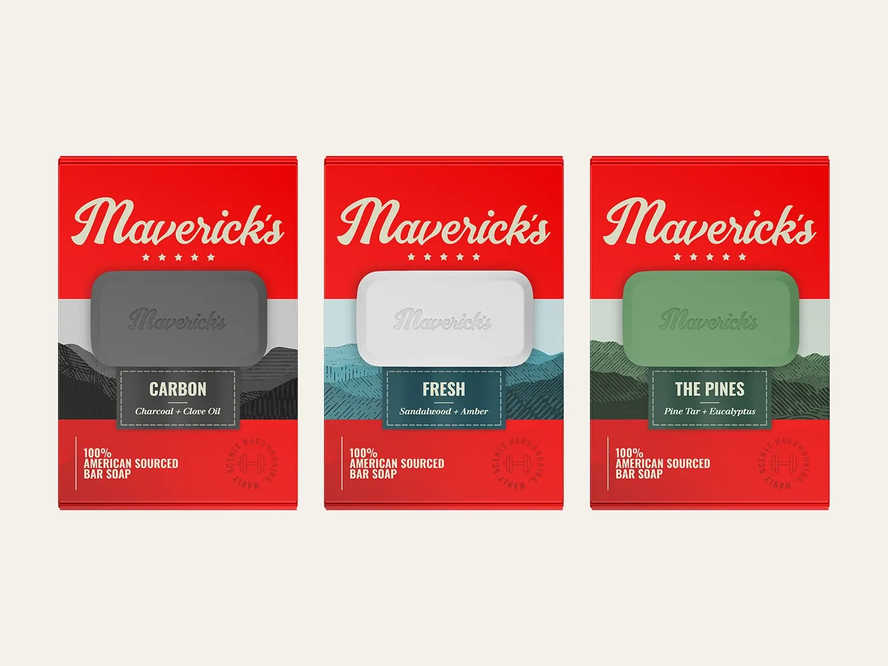
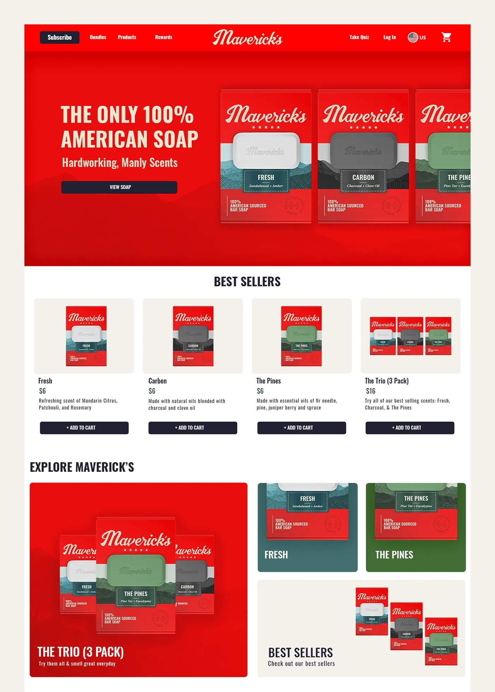
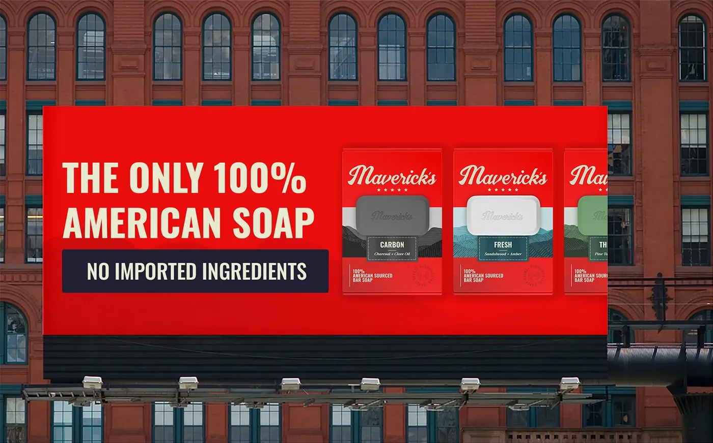
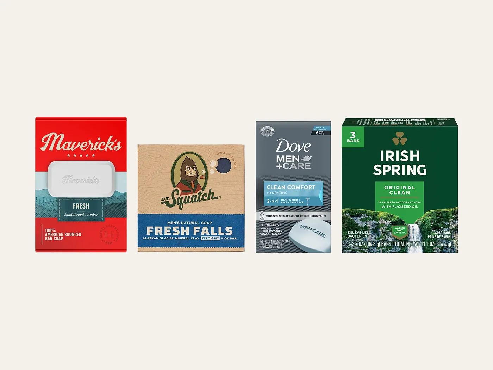
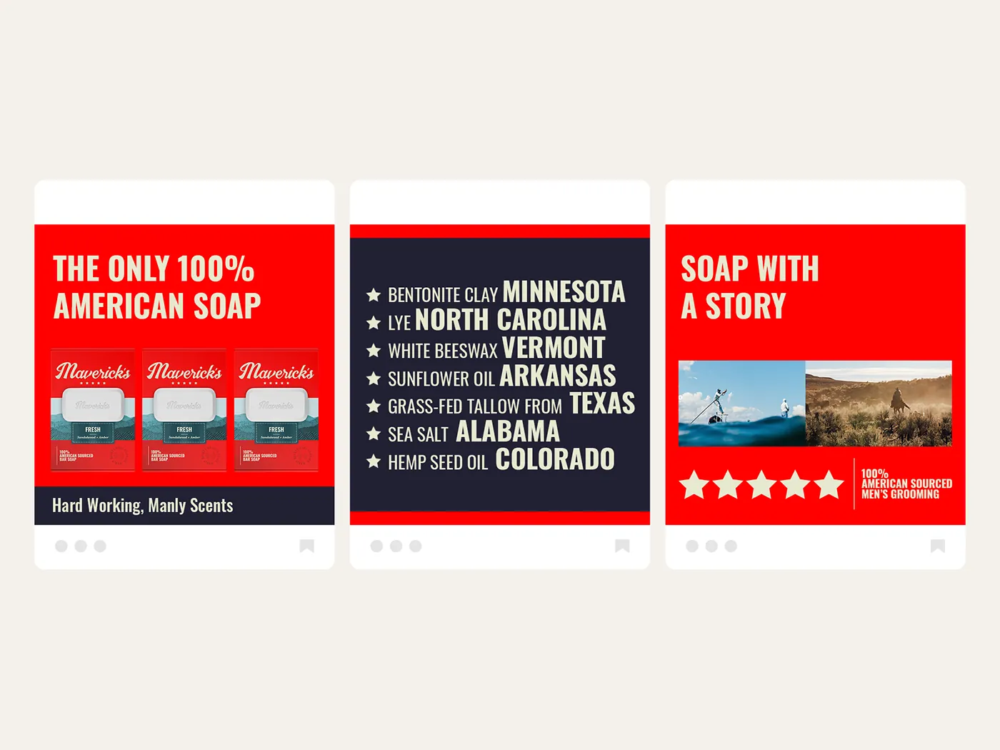
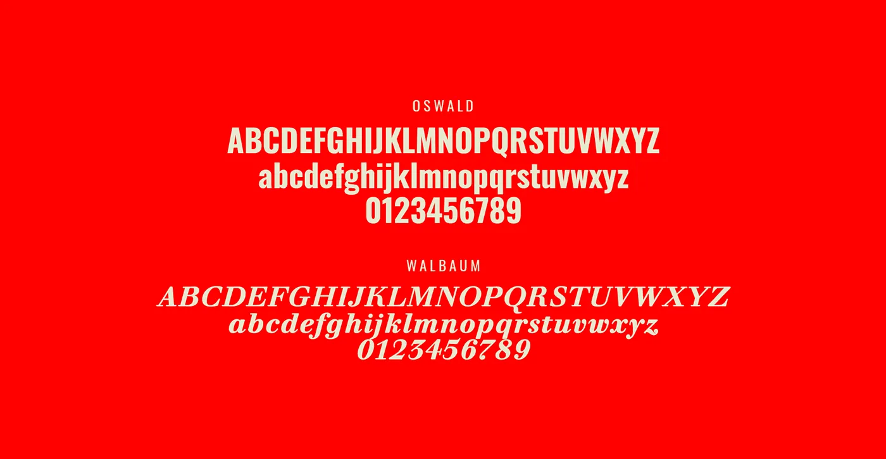
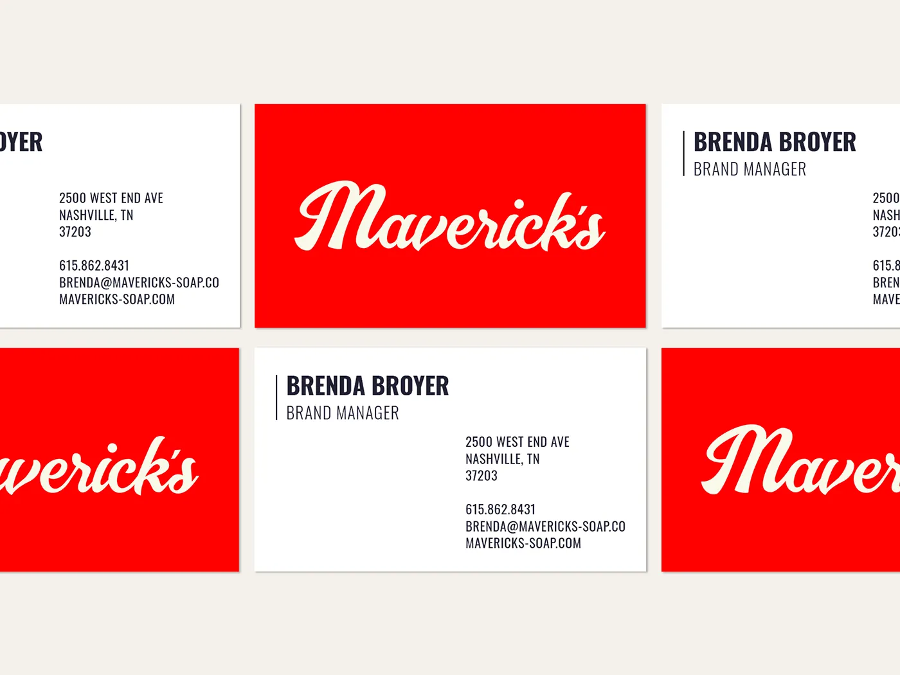
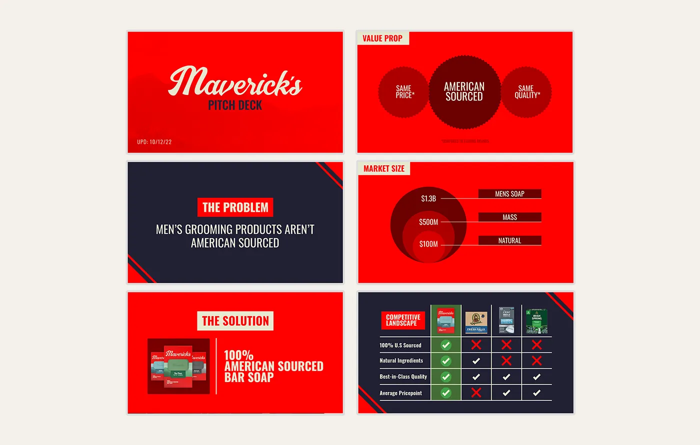

Jordan Darby Design
Jordan Darby DesignMaverick's
100% American soap. No imported ingredients.
Maverick's is a brand I created from scratch — premise, positioning, name, and design — to explore a real category problem. A self-initiated concept, not a client engagement.

The Premise
Maverick’s is a brand I invented. The premise came from watching COVID-era disruption expose how much of what Americans use every day depends on materials shipped from thousands of miles away — and asking what a men’s grooming line built on a single promise would look like: 100% American-sourced and 100% American-made.
The Challenge
A brand like this launches into a category owned by entrenched incumbents, selling to shoppers who are reluctant to change a routine they’ve had for years. To work at all, it would have to stop someone in the aisle, explain why domestic sourcing matters, and earn trust — in about three seconds.
The Approach
I aimed for something that would feel familiar enough to sit beside the category leaders while still reading as new and authentic: a minimal graphic system, a hand-drawn logo, and a down-to-earth, patriotic palette. The packaging is a bold patriotic red that creates a vibrant color block on the shelf, paired with an off-white logo so it stays legible from a distance. A nature-inspired pattern lets shoppers identify the scent at a glance, and the front panel is restricted to only what matters: the logo, the product, and the promise.
“The brand’s logo, off-white and hand-drawn, is complimented by a sharp and patriotic color palette of red and navy.”




“The packaging had to stand out on the shelf, educate the consumer, and earn trust — all at once.”



The Result
The system holds up as a shelf-ready brand: a red color block that competes for attention against established players, a hand-drawn mark that signals craft rather than mass production, and packaging that communicates the entire proposition in seconds. The name came last — “Maverick’s,” for an unorthodox approach to how the thing is made.
Jordan not only listens to clients to understand their needs but also asks appropriate questions to ensure the end product is compelling enough to drive the project to the next step. I highly recommend Jordan to anyone seeking a top-notch graphic designer!

Sheila Rogers
Director of Sales while I was at Dare Devil Display WorksWant this kind of thinking on your brand?
Tell me about your brand or packaging challenge — I’ll come back with ideas and clear next steps.
Free, no-pressure consult · Same-day reply to most inquiries
✉ Start a Project